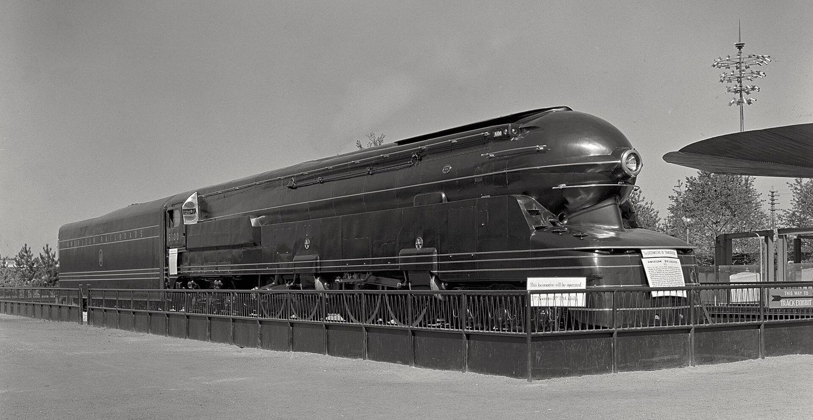

References / Product / 297
Pennsylvania Railroad S1 locomotive at the 1939 World’s Fair
Raymond Loewy’s shroud for the longest steam locomotive ever built: a bullet nose with a round headlamp and speed lines that run the whole length of engine and tender.
- Source
- Wikipedia: Pennsylvania Railroad class S1
- Creator
- Raymond Loewy (shroud); Pennsylvania Railroad, Altoona Works (builder)
- Made
- 1939 (completed 31 January 1939); photographed 15 July 1939
- Style
- Streamline Moderne (agent-proposed, not yet reviewed by a person)
- Moods
- Streamlined, powerful, machine-age
- Evidence
- Downloaded and inspected two Gottscho-Schleisner photographs of No. 6100 at the New York World’s Fair: PRR S1.jpg (Library of Congress reproduction number LC-G613-35557, dated 15 July 1939) and gsc.5a18640, both at 1920 px on Commons. The stored image is the first.
- Reviewed
- Rights
- Open license, stored. License: public domain. Rights policy


Context
Built at the Pennsylvania Railroad’s Altoona Works and completed on 31 January 1939; Raymond Loewy designed the streamlined shell. At 140 ft 2½ in with tender it was the longest reciprocating steam locomotive ever. At the 1939 New York World’s Fair it ran on a roller platform at 60 mph under the lettering “American Railroads”, part of a combined 27-railroad exhibit. It served from 1939 to 1946 and was scrapped in 1949. Wikipedia.
Observed
- The locomotive is very long and low; the photograph is more than twice as wide as it is tall and still crops the tender.
- The front is a rounded bullet nose with a large round headlamp in a ring at its center.
- Groups of two and three thin bright lines run from the nose back along the whole engine; the tender carries the same parallel lines and the words “AMERICAN RAILROADS” in spaced capitals.
- The shell is a smooth, dark, glossy surface; small star-shaped badges are the only other marks.
- A railing encloses the exhibit, and the fair’s disc-shaped canopy and a lighting mast appear at right.
Why it belongs
The S1 is the rubric’s speed line in its purest form: a few parallel lines drawn along a long dark body, meeting at a round headlamp. It also shows that the style works on a dark ground, not only on cream.
Borrow
Start a group of parallel lines at a circular element and run them to the far edge of the layout.
Space the capitals of a long label widely so it reads as a band.
Measured
Machine-extracted by tools/image-traits.py on . Full measurement.
- Mean chroma
- 0.01
- Palette
- #a9a8a6 29%
- #9b9a98 19%
- #504f4e 13%
- #292828 8%
- #898886 8%
- #424140 7%
- #5f5e5c 3%
- #373635 3%

